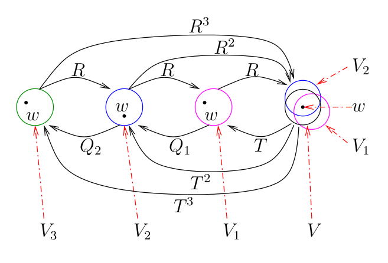

| Document précédent | Document suivant |
Les ensembles de Julia
Dans un document précédent, on a présenté certaines des propriétés de la fonction logistique. Plus spécifiquement, on a étudié les itérations de la fonction à valeurs réelles définie par pour différentea valeurs de .
L'étape logique suivante est d'étudier les itérations de fonctions à valeurs complexes définie sur le plan complexe.
Ce document exige une certaine connaissance de la théorie de l'analyse complexe.
Certains lecteurs pourraient choisir d'ignorer les sections théoriques et plutôt choisir de lire seulement la section sur la où ils pourront générer les ensembles de Julia pour les fonctions polynomiales de degré deux.
Avertissement: Si les lecteurs espèrent trouver sur ce site Internet des applications pour produire des beaux ensembles de Julia en couleur, ils vont être déçus. Ce site Internet porte principalement sur la théorie qui se cache derrières les beaux ensembles de Julia. Les lecteurs peuvent utiliser Google pour trouver sur l'Internet beaucoup d'applications pour produire des beaux ensembles de Julia en couleur.
Concepts élémentaires d'analyse complexe
Les sections théoriques demandent une connaissance élémentaire de la topologie et de l'analyse complexe. Dans ce document, nous démontrons ou ébauchons la preuve de seulement certains des résultats que nous énonçons. Pour les démonstrations complètes de tous les résultats énoncés, le lecteur doit consulter les énumérées à la fin de ce document.
Dans ce document, une composante connexe d'un ensemble est un sous-ensemble connexe de tel qu'il n'existe pas de sous-ensemble connexe de avec .
Nous considérons les fonctions holomorphes où est la sphère de Riemann (une variété complexe). À l'aide d'une projection stéréographique, nous pouvons définir une application conforme injective de sur , la compactification du plan complexe. Les fonctions holomorphes sont alors les fonctions rationnalles où et sont deux polynômes. Nous pouvons assumer que est dans la forme réduite; c'est-à-dire, et n'ont pas de facteurs communs.
Le degré d'un fonction rationnelle , dénoté , est la plus grande valeur entre le degré de et le degré de . Nous disons que est une préimage de de multiplicité si est la plus grande valeur positive telle que pour . Si est une fonction rationnelle de degré et , alors le nombre d'éléments dans l'ensemble des préimages de comptés avec multiplicité est . Dans ce document, nous allons principalement considérer les fonctions rationnelles de degré plus grand ou égal à .
Définition: Nous disons que deux fonctions rationnelles et sont conformément conjuguées s'il existe une transformation de Möbius telle que .
Il est enseigné dans un premier cours d'analyse complexe que les transformations de Möbius sont des bijections et préservent les angles. Il en découle que des fonctions conformément conjuguées ont plusieurs propriétés en commun.
Exemple A: Toute fonction polynomiale de la forme est conformément conjuguée à une fonction polynomiale de la forme . Soit . On a que donne
Dans le cas particulier où et , nous obtenons que la fonction logistique est conformément conjuguée à la fonction où . Quand , nous avons vu que le SDD généré par est chaotique sur l'intervalle pour , et sur l'ensemble définie à la section du document pour . Nous pouvons donc nous attendre à ce que aura un comportement étrange pour . De plus, quand varie de à , nous observons une cascade de dédoublement de périodes comme nous avons pour la fonction logistique. Plus précisément, il découle de . que varie de à lorsque varie de à . Il y a une application graphique dans le document semblable à l'application graphique dans le document pour explorer cette cascade de dédoublement de périodes. Le lecteur devrait lire la pour plus d'information.
Donc, l'étude des ensemble de Julia promet d'être excitante..
Soit . Il découle du théorème des représentations de Riemann que toute surface de Riemann simplement connexe est conformément équivalent à l'un des ensembles suivants: , où ; C'est-à-dire, il existe un bijection analytique de à l'un des ensembles suivants: , ou .
Remarque: Pour le lecteur qui n'aurait pas appris ce qu'est une surface de Riemann, l'exemple le plus simple d'une surface de Riemann est fourni par la fonction définie par . Notons que est de multiplicité à l'origine. Soit pour deux copies du plan complexe après qu'il est été découpé le long de la section positive de l'axe des . Nous assumons que le bord inférieur reprédente la section positive de l'axe des .

Si on colle le bord supérieur de au bord inférieur de et le bord supérieur de au bord inférieur de , nous obtenons la surface de Riemann associée à la fonction . La fonction est maintenant une bijection continue. Nous avons que est une bijection pour . L'origine est appelée un point de branchement car il appartient à et . Si on considère alors est aussi un point de branchement. Le lecteur devrait essayer de visualiser la surface de Riemann associée à la fonction définie par . pour un entier positif .
Ce n'est pas une définition rigoureuse des surfaces de Riemann mais c'est suffisant pour comprendre le comportement des fonctions rationnelles plus tard.
Définition: Une famille de fonctions holomorphes définies sur un ensemble ouvert est normale sur si toute suite de fonctions de a une sous-suite qui converge uniformément sur les sous-ensembles compacts de .
Le théorème de Arzela-Ascoli affirme qu'une famille de fonctions holomorphes définies sur un ensemble ouvert est normale si et seulement si elle est équicontinue sur tout sous-ensemble compact de . De plus, il est démontré qu'une famille de fonctions holomorphes définies sur un ensemble ouvert est normale si elle est localement uniformément bornée; c'est-à-dire, pour chaque ensemble compact , il existe une constante telle que pour tout . Ce résultat est dû à Montel comme c'est le cas pour le théorème suivant.
Théorème (Montel): Soit une famille de fonctions holomorphes définies sur un ensemble ouvert . S'il existe trois points distincts tels que pour tout et tout , alors est normale sur .
Le théorème suivant est très utile pour étudier les fonctions rationnelles .
Théorème (Schwarz): Supposons que est une fonction holomorphe telle que . Alors pour tout et . Si pour un point ou , alors pour une valeur de .
Définition des ensembles de Julia
Notre objectif principal est l'étude des familles de fonctions holomorphes définies par où est une fonction rationnelle.
Définition: Soit une fonction rationnelle. Un point est un point stable de s'il existe un voisinage ouvert de tel que la famille est normale sur . L'ensemble de tous les points stables de est dénoté . L'ensemble de Julia de est l'ensemble .
La définition d'ensembles de Julia donnée ci-dessus est la définition donnée par G. Julia et P. Fatou dans les articles qu'ils ont publiés au début du vingtième siècle. Nous fournirons prochainement une définition des ensembles de Julia qui est utile pour dessiner des ensembles de Julia.
Puisque est un ensemble ouvert, nous avons que est un ensemble fermé. Puisque est une application ouverte, il n'est pas difficile de démontrer que ; et ; c'est-à-dire, est complètement invariant sous l'action de . Il en découle que est aussi complètement invariant sous l'action de ; c'est-à-dire, et . Il est facile de démontrer que pour . Le résultat suivant est une conséquence du théorème de monodromie en analyse complexe.
Théorème: Si est fonction rationnelle, alors .
Démonstration (ébauche): La démonstration est par contradiction. ...
Si , alors est normale sur . Donc, il existe une sous-suite qui converge uniformément sur les sous-ensembles compacts de , incluant lui-même pusique c'est un ensemble compact. Puisque l'espace des fonctions holomorphes sur (i.e. les fonctions rationnelles) est fermé dans cette topologie, la limite de cette sous-suite est une fonction holomorphe sur (i.e. une fonction rationnelle) de degré fini. Cependant, lorsque au lieu de converger vers comme cela devrait être le cas. ∎
Exemple: Soit la fonction définie par pour arbitraire mais fixe.
Nous avons que est complètement invariant sous l'action de . De plus, nous avons que converge uniformément sur les sous-ensembles compacts de vers la fonction constante . De même, nous avons que converge uniformément sur les sous-ensembles compacts de vers la fonction constante . Ainsi, il découle du que . Il découle aussi des deux observations précédentes que, si est un ensemble ouvert tel que , alors aucune sous-suite de peut converger uniformément sur un sous-ensemble compact tel que et car la limite de cette sous-suite devrait être une fonction continue avec pour , et pour . Ce qui n'est pas possible. Donc .
Puisque où la fonction est définie par , et puisque le SDD généré par a un comportement chaotique, comme nous avons vu à la section du document , nous pouvons conclure que le SDD généré par a un comportement chaotique sur . Nous allons voir prochainement que cela est le cas pour le SSD généré par sur .
Comme nous allons voir, les ensemble de Julia ne sont pas normalement des courbes simples comme dans l'exemple précédent. De plus, l'intérieur des ensembles de Julia peut ne pas être vide contrairement à l'exemple précédent. Rappelons que l'intérieur d'une ensemble est le plus grand ensemble ouvert contenu dans . Par exemple, nous allons prouver prochainement que l'ensemble de Julia de la fonction rationnelle définie par est .
Par définition des ensembles de Julia, si et est un voisinage ouvert de , alors il découle du que l'ensemble contient au plus deux éléments. Les éléments de sont appelés des points exceptionnels. Soit la collection des voisinages ouverts de et . L'ensemble contient aussi au plus deux éléments (la démonstration est laissée au lecteur).
Proposition: Si est une fonction rationnelle et , alors est complètement invariant.
Démonstration: Nous démontrons en premier que est inverse invariant; c'est-à-dire, . ...
Donc . Ainsi, ; c'est-à-dire, . Puisque cela est vrai pour tout voisinage ouvert de , nous avons que . Pour démontrer que est aussi positivement invariant (c'est-à-dire, ), Nous utilisons le fait que est un sous-ensemble de l'ensemble fini , et est envoyé sur . Donc, ils doivent avoir le même nombre d'éléments. Ainsi et . ∎
Si , alors est une fonction polynomiale. Si , alors est conformément conjuguée à une fonction polynomiale. Plus précisément, si , alors est une fonction polynomiale car est maintenant un point exceptionnel de .
Si et , alors est complètement invariant sous l'action de . Nous avons que et , ou et . Dans le premier cas, où est le degré de la fonction rationnelle (et ) car la seule préimgae de est avec une multiplicité de . Dans le deuxième cas, car le seul préimage de est avec une multiplicité de . En conclusion, est conformément conjuguée à définie par ou . Si et , alors est complètement invariant sous l'action de . Nous pouvons alors utiliser le raisonnement précédent.
Dans le cas (1) ci-dessus,
car
est un point stable de
puisque c'est un point attractif. De même.
car
sont des points stables de
puisque
sont des points attractifs pour
et
est une orbite attractive périodique de période
pour
.
Si nous choisissons
en (1) et
en (2) ci-dessus, nous avons que
pour tout
,
Donc
est indépendant de
.
Nous obtenons à partir de la conjugaison conforme entre
et
que
est indépendant de
.
Nous obtenons aussi que
.
Nous pouvons donc définir l'ensemble des points exceptionnels
associé à la fonction rationnelle
comme étant
pour tout
.
Nous verrons prochainement que les points exceptionnels sont soit
des points fixes super-attractifs
ou
des orbites périodiques super-attractives
.
Nous rappelons le lecteur que nous considérons seulement les
fonctions rationnelles de degré plus grand ou égale à
.
Le comportement de près d'un point stable est assez simple. Supposons que est un point stable de et converge vers . Il découle de l'équicontinuité de que converge vers un point si est assez près de , et si . Cependant, le comportement n'est pas aussi simple si n'est pas un point stable de . Plus précisément, nous avons le résultat suivant.
Proposition Ⅰ: Soit une fonction rationnelle. Si , alors est un sous-ensemble de l'ensemble des points d'accumulation de . En particulier, si , alors est la fermeture de .
Démonstration: La démonstration n'est pas difficile. ...
Supposons que , et que est un voisinage ouvert de . Puisque n'est pas un point stable, il existe un entier positif tel que car . Donc . Puisque cela est vrai pour tous les voisinages ouverts de , nous avons que est un point d'accumulation de . Pour démontrer le deuxième énoncé de la proposition, il suffit de noter que car est complètement invariant sous l'action de . ∎
Définition: Un point critique d'une fonction rationnelle est un point où n'est pas un homéomorphisme local. Une valeur critique de est l'image par d'un point critique pour .
Nous obtenons de la définition d'une fonction en analyse complexe qu'un point est un point critique si .
Définition: Soit une fonction rationnelle de degré . La déficience de est la valeur , où est le nombre d'éléments dans l'ensemble . La déficience totale de est la somme de la déficience de pour tout .
La déficience de est non-nulle si et seulement si est un point critique de la fonction rationnelle . De plus, la déficience totale d'une fonction rationnelle de degré est . Ceci implique que le nombre de points critiques de est au plus . Le lecteur peut consulter pour les démonstrations des propriétés de la déficience.
Proposition Ⅱ: Si est un ensemble complètement invariant sous l'action d'une fonction rationnelle , alors contient un point, deux points ou un nombre infini de points.
Démonstration (ébauche): Il suffit de démontrer que si est fini, alors il doit contenir un ou deux points. ...
Supposons que . Puisque est complètement invariant, il existe un nombre positif (Notons que est une permutation de ) tel que pour . Supposons que le degré de est . Puisque que chaque a seulement lui même comme préimage, la déficience de chaque est . Nous avons que car la déficience totale (i.e. la somme de toutes les déficiences) est . ∎
Le prochain résultat est une conséquence de la proposition précédente.
Proposition Ⅲ: Si est une fonction rationnelle, alors est un ensemble infini.
Démonstration (ébauche): Nous avons de la que contient un point, deux points ou un nombre infini de points car . ...
Si , alors nous pouvons procéder comme nous avons fait pour ci-dessus et démontrer que est conformément conjuguée à une fonction polynomiale car est complètement invariant. Puisque est un point stable d'une fonction polynomiale, nous avons que est un point stable de . Ceci est une contradiction de la définition de . Si , alors nous pouvons procédé comme nous avons fait pour ci-dessus et démontrer que est conformément conjuguée à la fonction définie par ou . Puisque sont des points stables de comme nous avons vu, nous avons que sont des points stables. Ceci contredit encore une fois la définition de . ∎
Le prochain résultat découle de la et de la .
Proposition: Si est une fonction rationnelle, alors est un ensemble parfait.
Les ensembles de Julia possèdent plus de propriétés intéressantes. Nous en énumérons deux ci-dessous. Plus de propriétés fascinantes seront énoncées prochainement.
Proposition Ⅳ: Si est une fonction rationnelle, alors il n'existe pas de sous ensemble propre, fermé et complètement invariant de .
Démonstration: Supposons que est un sous-ensemble propre, fermé et complètement invariant de , et que . ...
Puisque est complètement invariant, nous avons que . Puisque est fermé et , nous obtenons de la que . ∎
Proposition: Si est une fonction rationnelle et a un intérieur non-vide dans , alors ,
Démonstration: Supposons que est un ensemble ouvert. ...
Puisque tous les points de ne sont pas stables, nous obtenons du que où l'ensemble a au plus deux éléments. Puisque est complètement invariant, nous avons que . Finallement, puisque est fermé, nous obtenons que . ∎
Une définition équivalente des ensembles de Julia
Comme nous avons fait jusqu'à présent, nous assumons que est une fonction rationnelle. Rappelons qu'un point est un point périodique de période de si est le plut petit nombre entier tel que . Si , nous disons que est un point fixe de . Un point est éventuellement périodique s'il existe deux nombres entiers tels que . Si nous assumons que est le plus petit nombre entier plus grand que tel que . soit satisfait, alors est une orbite périodique de période .
Supposons que . L'orbite (positive) associée à est la suite où et pour . En particulier, si est un point périodique de période de , alors est une orbite périodique car .
Définition: Supposons que est un point périodique de période d'une fonction rationnelle et que . Nous disons que (ou l'orbite périodique associée à ) est
- super-attractif si ,
- attractif si ,
- neutre ou indifférent si , ou
- répulsif si .
Dans la définition précédente, il découle du théorème de la dérivée des fonctions composées que pour tout sur l'orbite périodique associée à .
Définition: Supposons que est un point fixe d'une fonction rationnelle . Nous disons que peut être linéarisé au point s'il existe
- deux ensembles ouverts avec et ,
- un homéomorphisme analytique , et
- un fonction linéaire définie par où est un constante
tels que et sur .
Proposition: Si est un point fixe attractif d'une fonction rationnelle , alors peut être linéarisée au point . Dans la définition de linéarisation ci-dessus, nous pouvons choisir et tels que . De plus, .
Proposition: Si est un point répulsif de la fonction rationnelle , alors peut être linéarisée au point . Nous avons que dans la définition de linéarisation ci-dessus.
Dans la proposition précédente, il n'existe pas d'ensemble ouvert tel que comme nous pouvons avoir pour un point fixe attractif.
Proposition: Supposons que est un point fixe super-attractif d'une fonction rationnelle et que est le plus petit nombre entier positif tel que . Alors il existe
- un voisinage ouvert de avec , et
- un homéomorphisme analytique ,
tels que et pour tout .
La proposition suivante est une conséquence des trois propositions précédentes.
Proposition Ⅴ: Un point fixe d'une fonction rationnelle est un point stable si est un point fixe attractif ou super-attractif. Le point fixe n'est pas stable s'il est un point fixe répulsif.
Il n'y a pas de résultats claires associés aux points fixes neutres d'une fonction rationnelle . Supposons que est un point fixe neutre d'une fonction rationnelle et que . Pour linéariser au point , nous devons trouver un homéomorphisme analytique , et deux ensembles ouverts avec tels que et sur . Cette dernière équation est appelée l'équation fonctionnelle de Schröder. Il a été démontré que s'il existe une fonction qui satisfait l'équation fonctionnelle de Schröder, alors est un point stable. L'inverse est aussi vrai. Il a été aussi démontré qu'aucune fonction satisfait l'équation fonctionnelle de Schröder si est une racine de l'unité. Même quand n'est pas une racine de l'unité et , il peut ne pas y avoir de fonction qui satisfait l'équation fonctionnelle de Schröder. Cependant, il a été démontré par C. Seigel qu'il existe une fonction qui satisfait l'équation fonctionnelle de Schröder si avec un nombre irrationnel pour lequel ils existent tels que pour tout nombre entier et . La mesure de l'ensemble des qui satisfont la condition précédente est égal à la mesure du cercle unité.
Il découle de la proposition précédent que l'ensemble des points périodiques répulsifs d'une fonction rationnelle est un sous-ensemble de . Puisque est fermé, nous avons que . En fait, nous avons un résultat plus fort.
Théorème Ⅵ: Si est une fonction rationnelle, alors .
La démonstration de ce théorème peut être divisée en plusieurs étapes. Nous énumérons ces étapes ci-dessus sans donner de démonstrations. La démonstration de chaque étape se trouve dans . Nous devons premièrement introduire une définition et plusieurs résultats préliminaires.
Définition: Le basin d'attraction d'un point fixe super-attractif ou attractif d'une fonction rationnelle est l'ensemble . Le basin d'attraction immédiat de , dénoté , est la composante connexe de , qui contient .
Le basin d'attraction d'un point périodique attractif de période (i.e. de l'orbite périodique associée à ) est l'ensemble . Le basin d'attraction immédiat de ce point périodique est l'ensemble .
Il découle du que est normal sur . De plus, est l'ensemble connexe le plus grande qui contient le point fixe super-attractif ou attractif et sur lequel est normal.
Proposition: Si est une fonction rationnelle et est un point fixe super-attractif ou attractif de , alors où est le symbole utilisé pour dénoter la frontière d'un ensemble.
Démonstration: Nous avons évidemment que ...
car les points sur la fromtière de ne sont pas des points stables. Puisque est complètement invariant sous l'action de , nous avons que est un sous-ensemble fermé de et est complètement invariant sous l'action de . Il découle de la que . ∎
Exemple: Si nous utilisons la méthode de Newton pour estimer les racines de la fonction définie par , nous devons itérer la fonction définie par . Le polynôme a trois racines dans le plan complexe. est évidemment l'une des racines. Puisque , nous avons que est un point fixe super-attractif. La région en noir dans la figure ci-dessus est où . la frontière de la région en noir est l'ensemble de Julia de à l'intérieur de .

Proposition Ⅶ: Si est une fonction rationnelle, et est un point fixe super-attractif ou attractif, alors contient au moins une valeur critique de .
Démonstration (ébauche): Nous supposons que ne contient pas de valeurs critiques de . ...
Soit un voisinage ouvert et simplement connexe de .
- Puisque
ne contient pas de valeurs critiques de
,
nous pouvons utiliser le théorème de monodromie pour obtenir un
voisinage ouvert et simplement connexe
de
et une fonction analytique
telle que
sur
et
sur
.
Donc,
peut être interprétée comme étant une
branche
de . - Puisque ne contient pas de valeurs critiques de , nous pouvons utiliser le théorème de monodromie pour obtenir un voisinage ouvert et simplement connexe de et une fonction analytique telle que sur et sur . Puisque sur , nous pouvons étendre à en définissant sur . Nous avons maintenant .
- Puisque ne contient pas de valeurs critiques de , Nous pouvons utiliser le théorème de monodromie pour obtenir un voisinage ouvert et simplement connexe de et une fonction analytique telle que sur et sur . Puisque sur , nous pouvons étendre à en définissant sur . Nous avons maintenant .
- Et ainsi de suite.

Il découle du que la famille de fonctions analytiques sur est normale car pour tout . C'est une contradiction de la car est un point fixe répulsif pour . ∎
La proposition précédente est aussi vrai si
un point fixe
est remplacé par
une orbite périodique
de période
.
Il suffit d'utiliser la proposition précédente avec la fonction
remplacée par la fonction
.
Nous sommes maintenant en position d'ébaucher la démonstration du .
Démonstration du (ébauche): Soit un fonction rationnelle de degré . ...
De plus, soit l'ensemble des points critiques de , l'ensemble des points périodiques de et l'ensemble des pôles de .
- Comme nous l'avons mentionné précédemment, il découle du concept de déficience que l'ensemble a au plus éléments.
- Nous avons que . Pour démontrer ce résultat, nous démontrons que . Puisque . est un ensemble fini et est fermé et parfait, nous avons que .
- Le nombre d'orbites périodiques super-attractives ou attractives de est au plus . C'est un corollaire de la car il y a au plus points critiques.
- Si
est le nombre d'orbites périodiques super-attractives ou attractives, et
est le nombre d'orbites périodiques neutres, alors le nombre d'orbites
non-répulsives est au plus
.
Ce résultat est une conséquence du fait qu'au moins
des orbites périodiques attractives sont des
continuations
d'orbite périodiques neutres. - Puisque le nombre d'orbites non-répulsives est fini selon (4), il découle de (2) que , où est l'ensemble de points répulsifs, car est fermé et parfait. Mais nous avons vu précédemment que .
Ceci conclus l'ébauche de la démonstration. ∎
Le théorème précédent a un corollaire intéressant.
Corollaire: Soit une fonction rationnelle, et un sous-ensemble fermé de tel que où est l'ensemble de points exceptionnels de . Si est un voisinage ouvert d'un point , alors il existe un nombre entier tel que . En particulier, il existe un nombre entier tel que .
Démonstration: Pour démontrer la première partie de ce corollaire, il suffit de considérer un point periodic répulsif . ...
Supposons que la période de est . Puisque est répulsif, il exist un voisinage ouvert de tel que . Puisque et n'est pas un point stable de , nous avons que . De plus, puisque pour et est un sous-ensemble compact de , il existe un numbre entier tel que . Nous obtenons la conclusion de la première partie du corollaire avec . Pour la deuxième partie du corollaire, si nous prenons , nous obtenons de la première partie du corollaire qu'il existe un nombre entier tel que . Puisque et sont complètement invariant sous l'action de , nous avons que . ∎
Il découle du corollaire précédent que est topologiquement transitif sur . Puisque est complètement invariant, le deuxième énoncé de la nous donne que a une dépendance sensible sur les conditions initiales. Puisque les points périodiques répulsifs sont dense dans selon le , nous pouvons conclure que le SSD généré par est chaotique sur .
La dernière partie du corollaire précédent peut être vu comme
une forme d'autosimilarité pour les ensembles de Julia. Il existe
une notion de quasi-autosimilarité
pour les ensembles
de Julia de fonctions rationnelles qui satisfont la définition
ci-dessous. Nous n'en dirons pas plus à ce sujet dans ce document.
Le lecteur peut consulter les à la fin de ce document pour plus d'information.
Définition: Soit une fonction rationnelle, l'ensemble de point critiques de , et la fermeture de l'ensemble . La fonction rationnelle est en expansion si .
Puisque , la proposition suivante supporte la possibilité que la structure de pourrait être très complexe.
Proposition Ⅷ: Si
est un point fixe attractif d'une fonction rationnelle
,
alors
est soit un ensemble simplement connexe ou un ensemble connexe avec un
nombre infini de trous
(représentés par des
composantes connexes fermées dans
).
Dans le dernier cas de la proposition précédente, est composé d'un nombre infini de composantes connexes fermées.
Ensemble des points stables
Pour mieux comprendre la structure de l'ensemble de Julia d'un fonction rationnelle , il est utile d'étudier l'action de sur les composantes connexes de l'ensemble des points stables de . Nous résumons simplement les résultats sur ce sujet pour mieux comprendre la complexité de l'action de .
Nous savons déjà que est complètement invariant sous l'action de . Il est claire qu'une fonction rationnelle envoie un ensemble connexe sur un ensemble connexe. Étant donné une composante connexe de , nous pouvons définir l'orbite dans l'espace des composantes connexes de . Une composante connexe de est éventuellement périodique s'il existe deux nombres entiers tels que . Nous avons alors que est une orbite périodique dans dont la période est un diviseur de . Le théorème suivant décrit les orbites dans .
Théorème (Sullivan): Soit une fonction rationnelle. Chaque composante connexe de l'ensemble des points stables de est éventuellement périodique.
Remarque: Les composantes connexes et bornées de
sont souvent appelées pétales car elles semblent former les
pétales d'une fleure quand nous regardons un
ensemble de Julia plein
comme cela est défini à la section
ci-dessous.
Étant donné deux composantes connexes et de , nous écrivons que s'ils appartiennent éventuellement à la même orbite périodique. C'est un relation d'équivalence sur .
Théorème (Shishikura): Soit un fonction rationnelle de degré . Il y a au plus classes d'équivalence de composantes connexes dans .
Il découle du théorème précédent qu'il y a au plus orbites périodiques dans .
Définition: Soit une fonction rationnelle. Un domaine de Sullivan est une composante connexe de qui appartient à une orbite périodique dans .
Soit un domaine de Sullivan qui appartient à une orbite périodique de période .
- est un domaine attractif si contient un point fixe attractif de et .
- est un domaine super-attractif si contient un point fixe super-attractif de et .
- est un domaine parabolique si la frontière de contient un point fixe neutre de où est un diviseur de , et .
- est un disque de Siegel si est simplement connexe, contient un point fixe neutre de , et est analytiquement conjugué à une rotation par un angle irrationnel ; c'est-à-dire, il existe un homéomorphisme analytique tel que , et où la fonction est définie par avec .
- est un anneau de Herman si est homéomorphique à un anneau de la forme et est analytiquement conjuguée à une rotation par un angle irrationnel ; c'est-à-dire, il existe un homéomorphisme analytique tel que où la fonction est définie par avec .
Si un élément d'une orbite périodique dans appartient à une des cinq catégories de domaines de Sullivan mentionnées ci-dessus, alors toutes les autres elements de cette orbite appartiennent aussi à cette catégorie. Nous avons le résultat suivant.
Théorème: Si est une fonction rationnelle, alors les éléments d'une orbite périodique dans appartiennent à une des cinq catégories de domaines de Sullivan énumérées ci-dessus.
Il ne semble pas facile de trouver des fonctions rationnelles dont l'ensemble des points stables possède des anneaux de Herman. affirme que les fonctions rationnelles de la forme pour certaines valeurs de et ; ont un ensemble de points stables qui possède un anneau de Herman qui contient le cercle unité. L'existence de et est confirmée par un théorème de (Voir les à la fin de ce document).
Le résultat suivant est un corollaire du théorème précédent et du fait tous les domaines de Sullivan sauf les domaines super-attractifs requièrent la présence de l'orbite d'un point critique qui n'est pas éventuellement périodique. De plus, le domaine supper-attractif contient un point critique périodique.
Corollaire Ⅸ: Soit une fonction rationnelle. Si tous les points critiques de sont éventuellement périodiques, et aucun point critique est périodique, alors .
Nous pouvons utiliser ce corollaire pour démontrer notre énoncé précédent que l'ensemble de Julia de la fonction rationnelle définie par est . Les points critiques de sont et , et ils sont tous éventuellement périodiques et non périodiques. Plus précisément, pour , nous obtenons l'orbite .
Proposition: Soit une fonction rationnelle. Si est une composante connexe complètement invariante de , alors , la frontière de .
Démonstration: Pour démontrer ce résultat, nous remarquons en premier que est complètement invariant car est complètement invariant. ...
De plus, par définition des ensembles de Julia. Donc est un sous-ensemble fermé et complètement invariant de . Il découle de la que . ∎
Proposition Ⅹ: Soit une fonction rationnelle de degré .
- Il y a au plus deux composantes simplement connexes et complètement invariantes de .
- Si le nombre de composantes connexes de est fini, alors est l'union d'au plus deux composantes connexes.
Démonstration (ébauche): La démonstrations de (1) est basée sur le concept de déficience mentionné précédemment. Pour (2), supposons qu'il y a plus de deux composantes connexes dans . ...
Puisque envoie . sur lui-même et le nombre de composantes connexes de . est fini par assomption, chaque composante connexe de . appartienne à une orbite périodique dans . Puisque le nombre d'orbites périodiques dans est au plus , il existe un nombre entier positif tel que toutes les composantes connexes de sont complètement invariantes sous l'action de . Il découle de (1) qu'une de ces composantes connexes n'est pas simplement connexe. Soit une composante connexe de qui n'est pas simplement connexe, et une autre composante connexe de . Si est la transformation de Möbius définie par où , alors est une fonction rationnelle telle que et sont des composantes connexes distinctes de l'ensemble des points stables de , et sont complètement invariantes sous l'action de . Nous avons utilisé le fait que est une bijection qui envoie les composantes connexes sur des composantes connexes. De plus, et n'est pas simplement connexe. Puisque n'est pas simplement connexe, il existe une courbe fermée qui ne peut pas être contractée homotopiquement dans à un point. Nous pouvons assumer que a un index de un (essentiellement, a l'allure d'un cercle). Soit la région bornée par qui ne contient pas . Donc car est connexe et . Nous avons que les fonctions sont des fonctions analytiques sur l'ensemble ouvert . Notons que n'a pas de pôles dans car et est une composante connexe complètement invariant sous l'action de qui contient . Ainsi, nous pouvons utiliser la formule d'intégration de Cauchy pour démontrer que la famille de fonctions rationnelles est normale sur . Plus précisément, nous avons que
pour tout . Puisque est borné, il existe tel que . De plus, puisque est complètement invariant, nous avons que pour tout . Il en découle que pour tout et . Ainsi pour tout et . Nous obtenons que
pour tout et . Ceci démontre que est localement bornée sur et donc normale sur . Mais car et
Ceci est une contradiction que ne contient pas de points stables. ∎
Les énoncés au sujet de la connexité des ensembles de Julia dans l'exemple qui suit sont démontrés à ci-dessous.
Exemple B: L'ensemble de Julia de la fonction polynomiale est dessiné dans la figure ci-dessous. Nous avons que est un ensemble connexe et fermé. L'ensemble est composé de deux composantes simplement connexes. Une de celle-ci contient .

Exemple C: L'ensemble de Julia de la fonction polynomiale est dessiné dans la figure ci-dessous. Nous avons que est composé d'un nombre infini de composantes connexes fermées. L'ensemble est composé d'une seule composante connexe qui n'est pas simplement connexe.

Exemple D: Soit
.
une des racines non-nulles de
.
Plus spécifiquement, soit
.
L'ensemble de Julia
de la fonction polynomiale
est dessiné dans la figure ci-dessous. Nous avons que
est un ensemble connexe. L'ensemble
est composé d'un nombre infini de composantes simplement connexes.
Cependant, au plus deux de ces composantes sont complètement
invariantes. Cet ensemble de Julia est appelé le lapin de Douady.
Cet ensemble de Julia occupe une
position centrale
dans l'analyse de l'ensemble de
Mendelbrot dans le .

Fonctions polynomiales
Les prochaines propositions seront utiles pour dessiner les ensembles de Julia de fonctions polynomiales. Une démonstration semblable à la démonstration de la donne le résultat suivant.
Proposition Ⅺ: Soit une fonction polynomiale. Toutes les composantes connexes bornées de l'ensemble des points stables sont simplement connexes.
Le point joue un rôle important dans l'étude des ensembles de Julia de fonctions polynomiales. Nous avons que est un point critique, un point exceptionnel et un point fixe super-attractif pour une fonction polynomiale . En particulier, il existe un voisinage ouvert de sur lequel est conformément conjugué à la fonction définie par où est le degré de . Comme toujours, nous considérons seulement les fonctions rationnelles de degré . Puisque est toujours un point stable pour un fonction polynomiale, l'ensemble de Julia d'un fonction polynomiale est contenu dans ; c'est-à-dire, est borné. Nous avons que . Ainsi .
Proposition: Si est une fonction polynomiale, alors aucun des domaines de Sullivan de est un anneau de Herman.
Démonstration: Supposons que est un anneau de Herman pour . ...
Si nous fessons référence à la définition d'anneau de Herman, nous avons que l'image par d'un cercle de la forme avec dans l'anneau est une courbe invariante sous l'action de qui ne peut pas être contractée homotopiquement dans à un point. Soit l'ensemble ouvert borné par qui ne contient pas . Nous avons que car et . De plus, il découle du théorème fondamental de l'algèbre que l'ensemble des points exceptionnels associés à est . Nous obtenons des deux dernières observations que . Mais ceci est une contradiction du principe du maximum pour les fonctions analytiques qui dit que le maximum de sur est atteint sur la frontière et donc pour tout . ∎
Il découle de la proposition précédente que pour toutes les fonctions polynomiales de degré plus grand que .
Il y a un résultat semblable au avec une démonstration semblable pour les fonctions polynomiales.
Proposition Ⅻ: Soit une fonction polynomiale. Si tous les points critiques de sauf pour sont éventuellement périodiques, et aucun des points périodiques finis est un point critique, alors .
Les ensembles de Julia qui satisfont la conclusion de la proposition précédente portent un nom spécial.
Définition: Soit une fonction rationnelle. Si l'ensemble stable est composé d'une seule composante connexe et simplement connexe dans , et l'ensemble de Julia est localement connexe, alors est appelé une dendrite.
Nous rappelons qu'un ensemble est localement connexe si, pour chaque , il existe un voisinage ouvert de tel que est un ensemble connexe dans la topologie induite sur .
Exemple: L'ensemble de Julia de la fonction est dessiné dans la figure ci-dessous. Nous avons que est une dendrite.

Proposition ⅩⅢ;: Soit une fonction polynomiale de degré . Les énoncés suivants sont équivalents.
- est conformément conjuguée à la fonction définie par sur l'extérieure d'un cercle centré à l'origine.
- est simplement connexe dans .
- est connexe.
- .
La démonstration de ce résultat n'est pas trop compliquée mais elle est longue. Elle se trouve dans . Rappelons que est l'ensemble des points critiques de . Le dernier énoncé de la proposition précédente dit que les orbites des points critiques sont bornées.
Nous avons vu l'application de décalage sur deux symboles dans le document . Ce concept se généralise à plus de symboles.
Définition: Soit l'espace des suites sur symboles. L'application de décalage sur symboles est l'application définie par pour tout .
Le prochain théorème affirme que, sous certaines conditions, le comportement chaotique du SDD généré par une fonction polynomial sur peut être décrit par une application de décalage.
Proposition ⅩⅣ: Soit un fonction polynomiale de degré . Si , alors est totalement discontinu et est conjugué à une application de décalage sur symboles.
La démonstration se trouve dans .
Exemple: À l', nous avons que est le seul point critique fini de et approximativement lorsque . Il découle de la que est connexe.
À l', nous avons aussi que est le seul point critique fini de . Cependant, lorsque . Il découle de la et de la que est l'union d'un nombre infini de composantes connexes fermées. De plus, nous avons de la que est totalement discontinu.
Finalement, À l', nous avons que
est le seul point critique de
où
,
et la suite
est bornée car elle converge
vers l'orbite périodique
de période . Il découle de la que est connexe.
Si est une fonction polynomiale de degré , alors nous avons de la , de la et de la que est un ensemble connexe si l'orbite de son point critique fini est bornée, et est totalement discontinu autrement.
Pour conclure cette section, nous énonçons un résultat de Douady and Hubbard au sujet du nombre maximal d'orbites périodiques super-attractives, attractives et neutres d'une fonction polynomiale. Nous avons vu précédemment que si est le nombre d'orbites périodiques super-attractives ou attractives, et est le nombre d'orbites périodiques neutres d'une fonction rationnelle , alors . En fait, ont démontrés un résultat plus fort pour les fonctions polynomiales à l'aide du concept de fonctions de type polynomiale.
Proposition ⅩⅤ: Le nombre total d'orbites périodiques super-attractives, attractives ou neutres d'une fonction polynomiale de degré est au plus .
Il y a beaucoup plus de résultats sur les ensembles de Julia et aussi plusieurs questions mathématiques fascinantes à leur sujet qui sont toujours sans réponses.
Représentation graphique des ensembles de Julia
La meilleure méthode pour dessiner l'ensemble de Julia d'une fonction rationnelle repose sur la . En particulier, si nous pouvons trouver un point , alors est la fermeture de . Cependant, le temps de calcul et l'espace mémoire d'un ordinateur peuvent limiter l'usage de cette méthode. De plus, la résolution de l'écran d'ordinateur peut affecter l'apparence de l'image. Cette méthode est mise en oeuvre dans le document . Donc, cette méthode est réservée pour les situations où nous avons accès à un bon ordinateur avec un écran d'ordinateur de haute résolution. Pour une application, comme celle ci-dessous, qui est écrite en JavaScript et qui est utilisée pour un site Internet, il est préférable d'utiliser la méthode moins exigeante décrite ci-dessous.
Dans la suite de cette section, nous considérons la fonction polynomiale définie par pour fixe mais arbitraire.
Remarque: Rappelons que nous avons vu à l' que toute fonction polynomiale de degré deux est conformément conjuguée à une fonction polynomiale pour une certaine valeur de . Ainsi, il n'y a aucune perte de généralité à considérer seulement les fonctions polynomiales .
Pour dessiner l'ensemble de Julia de , nous utilisons le fait que , la frontière du basin d'attraction du point fixe de . En fait, l'application ci-dessous dessine l'ensemble de Julia rempli de ; C'est-à-dire, l'ensemble . Donc, la frontière de est l'ensemble de Julia de .
Proposition: Si , alors lorsque .
Démonstration Étant donné , nous démontrons par induction que
pour tout et une valeur . ...
Nous obtenons de que pour tout . Puisque , nous avons que pour une valeur . Ainsi,
Ceci démontre notre énoncé initial pour . Nous assumons que notre énoncé initial est vrai pour une valeur arbitraire . Puisque par supposition, nous obtenons de l'énoncé initial avec que
Il découle de notre assomption que l'énoncé initial est vrai pour que
Ceci termine la démonstration par induction de notre énoncé initial. Ainsi, nous avons que
lorsque . ∎
Nous avons donc que .
Dans le but de dessiner des ensembles de Julia remplis, nous choisissons un grand nombre , disons N, et nous déclarons que si pour tout . Naturellement, nous n'obtenons pas exactement mais, si est assez grand, c'est une approximation assez précise de pour les écrans d'ordinateurs dont la résolution est limitée par le nombre de pixels. Quand nous dessinons des ensembles de Julia, nous devons tenir compte de l'augmentation du temps de calcul lorsque nous augmentons .
Quand est une dendrite, alors a un intérieur vide. Donc, dans cette situation, il est possible que la figure soit presque vide si la majorité des pixels de l'écran d'ordinateur ne sont pas associés à des points dans . D'autres méthodes numériques pour dessiner les ensembles de Julia, incluant les dendrites, sont décrites à la section du document .
Nous pouvons utiliser l'application graphique ci-dessous pour dessiner des ensembles de Julia remplis. Étant donné un nombre complexe , les points du plan complexe qui sont colorés en noire sont des points qui appartiennent à l'ensemble . La frontière de la région en noire est donc l'ensemble de Julia de .
|
Pour agrandir une région de l'ensemble de Julia, il suffit de cliquer avec le bouton gauche de la souris sur la région désirée dans la figure ci-dessus. Le nombre d'itérations doit être augmenté lorsque l'image est agrandie pour obtenir une image plus précise. Attention: Augmenter le nombre d'itérations n'assure pas la production d'une image plus précise en raison des erreurs de troncature. En fait, le contraire peut se produire. Pour voir l' Seulement des nombres décimaux peuvent être utilisés comme valeurs de et . Un expression de la forme n'est pas acceptable car le contenu de ces champs n'est pas évalué mathématiquement. |
Références
Le contenu de ce document est principalement basé sur les livres et articles suivants.
- V. Arnold, Small denominators: I: On the mappings of the circumference onto itself, Amer. Math. Soc. Transl. (2) 46 (1965), 213-284.
- P. Blanchard, Complex Analytic Dynamics of the Riemann Sphere, Bull. Amer. Math. Soc. (N.S.) 11 (1984), 85-141.
- R. L. Devenay, An Introduction to Chaotic Dynamical Ssystems, The Benjamin/Cummings Publishing Co., Inc. (1986).
- A. Douady, Systèmes dynamiques holomorphes, Séminaire Bourbaki, 35e année, 599, Astérisque 105-106 (1982), 39-63.
- L. Keen, Julia Sets, in Chaos and Fractals: The Mathematics Behind the Computer Graphics, R. L. Devaney and L. Keen, Editors, Proceeding of symposia in applied mathematics, AMS short course lecture notes (1989), 57-74.
- H.-O. Peitgen, H. jürgens and D. Saupe, Chaos and Fractals: New Frontiers of Science, Springer-Verlag (1992).
Le lecteur devrait consulter pour une liste plus exhaustive de références.
| Document précédent | Document suivant |